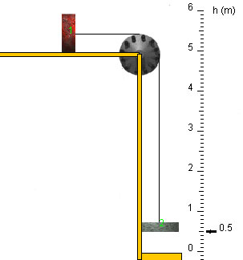

The apparatus shown above is known as Fletcher's Trolley. The apparatus is assumed to have no friction. The string and pulley are assumed to be massless.
Let the magnitudes of the forces exerted by the string on blocks 1 and 2 be denoted T1 and T2, respectively, and the tension in the string by T.
Which of the following relations is true? (Note: the answer does not depend on whether the blocks are moving or block 1 is fixed.)
(a) T = T1 = T2
(b) T = T1 + T2
(c) T1 > T > T2